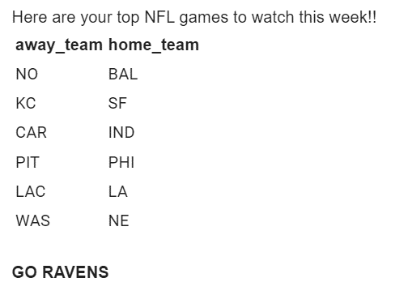

Growing up in Baltimore MD, I’ve been a huge Ravens fan for as long as I can remember. I’ve always loved American football and I try to watch as many games as I can… regardless of where I’m living in the world. The problem is there are just too many games to watch in any given week. Therefore, my goal for this project was to create a program that tells me the “top” games of the week, depending on a criteria I’ve created. So what’s my criteria?
httr and jsonlitelibrary(here)
library(tidyverse)
library(janitor)
library(httr)
library(jsonlite)
library(RCurl)
library(kableExtra)
library(gt)
library(gmailr)
library(glue)
library(mysportsfeedsR)# for request
season = "pre" # "pre" or "regular"
n_week = 1 # week number
# for data cleaning
close_game_points = 5
close_game_points_total = 35
high_score_points = 40This was by far the most challenging part! It’s only a few lines of code, but it took me hours to figure out the formatting of everything
The API documentation from the website I’m using specifically says:
https://api.mysportsfeeds.com/v2.1/pull/nfl/{season}/week/{week}/games.{format}”The first couple of lines of code below are accessing and loading in my credentials and authorization keys
Then I use httr::GET() to send a request to the API
I use the glue() function to paste together my URL string that includes the parameters I’ve set above
I also use the add_header argument to add the Authorization in the specific way the website has instructed
When we look at the response, we see the Status = 200 which is exactly what we want to see! This means the request has succeeded yay :smile:
setwd(here("../"))
source("login_creds.R")
res = GET(glue('https://api.mysportsfeeds.com/v2.0/pull/nfl/2021-{season}/week/{n_week}/games.json'),
add_headers(Authorization = paste("Basic", auth)))
res ## Response [https://api.mysportsfeeds.com/v2.0/pull/nfl/2021-pre/week/1/games.json]
## Date: 2021-08-26 22:25
## Status: 200
## Content-Type: application/json
## Size: 37.4 kBHowever, the response is an object that is not very R friendly so…
httr::content() to do thisjsonlite::fromJSON() (this function only accepts characters, which is why I used content() first)api_response <- content(res, as="text")
api_response <- jsonlite::fromJSON(api_response, flatten=TRUE) # flatten=TRUE automatically flattens nested data into a single non-nested data frame
games_raw <- api_response$games # selecting the data I wantTurns out, there’s already an entire Github repo that has a MySportsFeed R wrapper to make the process of getting the data from the API much easier. It’s always good to have a look on github first, especially for popular APIs!
# authenticate_v2_x(auth2) # auth without base64()
#
# weekly_games <- msf_get_results(version='2.0',
# league='nfl',
# season='2021-pre',
# feed='weekly_games',
# params=list(week=1))
#
# games_raw <- weekly_games$api_json$gamesgames_clean <- games_raw %>%
as_tibble() %>%
clean_names() %>%
select(schedule_week, schedule_away_team_abbreviation, schedule_home_team_abbreviation, score_away_score_total, score_home_score_total, score_quarters) %>%
rename(away_team = schedule_away_team_abbreviation,
home_team = schedule_home_team_abbreviation,
away_score_final = score_away_score_total,
home_score_final = score_home_score_total) %>%
unnest(score_quarters) %>% # was a list with 3 variables before, this unnests the list
mutate(final_score_diff = abs(away_score_final-home_score_final),
total_score_combine = away_score_final+home_score_final)
games_clean## # A tibble: 64 x 10
## schedule_week away_team home_team away_score_final home_score_final
## <int> <chr> <chr> <int> <int>
## 1 1 WAS NE 13 22
## 2 1 WAS NE 13 22
## 3 1 WAS NE 13 22
## 4 1 WAS NE 13 22
## 5 1 PIT PHI 24 16
## 6 1 PIT PHI 24 16
## 7 1 PIT PHI 24 16
## 8 1 PIT PHI 24 16
## 9 1 TEN ATL 16 3
## 10 1 TEN ATL 16 3
## # ... with 54 more rows, and 5 more variables: quarterNumber <int>,
## # awayScore <int>, homeScore <int>, final_score_diff <int>,
## # total_score_combine <int>ravens_chiefs <- games_clean %>%
filter(away_team %in% c("BAL", "KC") | home_team %in% c("BAL", "KC")) %>%
select(away_team, home_team)
close_games <- games_clean %>%
filter(final_score_diff <= close_game_points & total_score_combine > close_game_points_total) %>%
select(away_team, home_team)
high_games <- games_clean %>%
filter(total_score_combine >= high_score_points) %>%
select(away_team, home_team)
lead_change <- games_clean %>%
select(away_team, home_team, quarterNumber, awayScore, homeScore) %>%
group_by(away_team, home_team) %>%
mutate(cum_away_score = cumsum(awayScore),
cum_home_score = cumsum(homeScore)) %>%
mutate(q_score_diff = cum_away_score - cum_home_score, # negative means away team in the lead
q_score_diff_sign = sign(q_score_diff)) %>% # just makes it easier to read either + or - 1
summarise(sign_diff_sum = sum(diff(sign(q_score_diff_sign)) != 0)) %>% # how many sign changes are there with each game
filter(sign_diff_sum >= 2) %>%
select(away_team, home_team)
final_games <- rbind(ravens_chiefs, close_games, high_games, lead_change) %>%
distinct(away_team, home_team)
final_games ## # A tibble: 6 x 2
## away_team home_team
## <chr> <chr>
## 1 NO BAL
## 2 KC SF
## 3 CAR IND
## 4 PIT PHI
## 5 LAC LA
## 6 WAS NEgmailr packagegames_table <- final_games %>%
kable()
gm_auth_configure(key = key, secret = secret)
email_msg <- glue("Here are your top NFL games to watch this week!! <br> {games_table} <br> <b>GO RAVENS</b>")
my_html_msg <- gm_mime() %>%
gm_to(c("j.sloane@unsw.edu.au")) %>%
gm_from("jsloane1992@gmail.com") %>%
gm_subject("NFL Games!") %>%
gm_html_body(email_msg)
gm_send_message(my_html_msg)